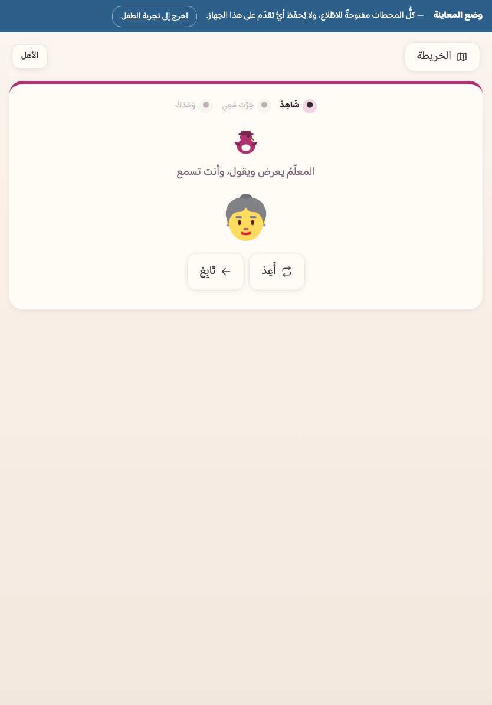
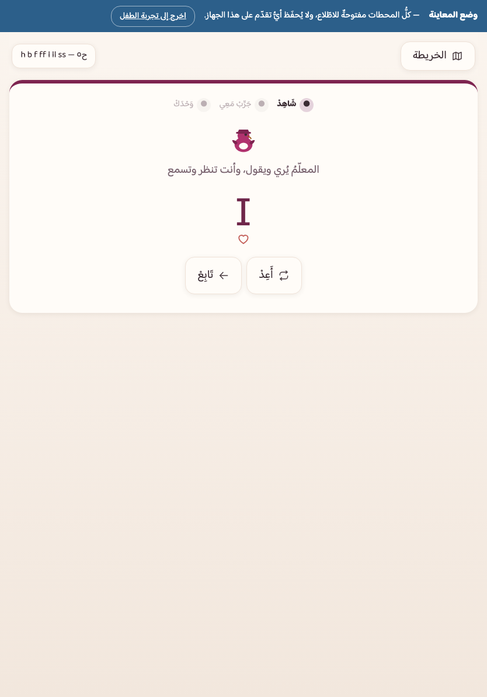

مسارُ السمع — ٢٧ محطة
يفهم الإنكليزيةَ المسموعة ويستجيب لها: كلمةٌ تُسمَع وصورةٌ تُلمَس، وأمرٌ يُسمَع وفعلٌ يُنفَّذ، وأصواتٌ متقاربة تُميَّز، ثم أذنٌ فونيمية تسمع أجزاءَ الكلمة. ٢٤٦ مفتاحَ قياسٍ فيه.
٥٩ محطة، مرتّبةً في ٢١ قسماً على خريطةٍ واحدة، تفصلها ٣ بوابات إتقان. والطريقُ واحد: التالي مقفلٌ حتى يُتمّ الذي قبله، ولا قائمةَ يختار منها الطفل. وهي رحلةُ مسارين مقترنين — مسارِ السمع ومسارِ الحرف — لا مسارٍ واحد؛ وذلك أوّلُ ما يفترق فيه تعليمُ لغةٍ ثانية عن تعليم لغةِ الطفل.
الطفلُ الذي يتعلّم فكَّ العربية ينطقها أصلاً: هو يعرف معنى الكلمة ويجهل رسمَها وحدَه. والإنكليزيةُ لغةٌ ثانية — يجهل معناها ورسمَها معاً. فلو بدأنا بالحرف لأنتجنا فكّاً بلا معنى: طفلاً ينطق sat نطقاً صحيحاً ولا يعرف ماذا تعني. ولذلك مساران يمشيان معاً من اليوم الأول.
يفهم الإنكليزيةَ المسموعة ويستجيب لها: كلمةٌ تُسمَع وصورةٌ تُلمَس، وأمرٌ يُسمَع وفعلٌ يُنفَّذ، وأصواتٌ متقاربة تُميَّز، ثم أذنٌ فونيمية تسمع أجزاءَ الكلمة. ٢٤٦ مفتاحَ قياسٍ فيه.
يفكّ المكتوبَ بسلّمٍ شبهِ مفكوك: ٧٢ رسماً على ١٦ درجة، ومعها ١١ قصةً كلُّ كلمةٍ فيها من رموزٍ دُرِّست، و٥ محطاتِ عودةٍ لأزواج الأذن عند درجات رموزها. ٣٥٢ مفتاحَ قياسٍ فيه (منها ٨ مشتركةٌ مع مسار السمع — وهي الأزواجُ العائدة، مهارةٌ واحدة تُمرَّن مرّتين).
لا تُعرَض كلمةٌ مكتوبةً للفكّ قبل أن تبلغ صندوقَ الإتقان في مفتاحها السمعيّ. فحين يرى الطفلُ cat مكتوبةً أوّلَ مرّة، تكون أذنُه قد أتقنتها قبلَ ذلك بأيام: يسمعها فيلمس صورةَ القطّ بلا تردّد. عندها يكون الفكُّ كشفاً عن معلوم لا فكَّ طلاسم.
وهو قيدٌ مفروضٌ في البنية لا موعودٌ في وثيقة: برنامجُ فحصٍ يجرد ٧٨ كلمةً وشائكةً مع كلّ تشغيل، ويرفض أن يمرّ لو دُسّت فيه كلمةٌ لم تُتقَن سمعاً. والصندوقُ المقصود هو الثالث في سلّم المراجعة — أي أنّها صحّت مرّاتٍ متباعدة، لا مرّةً واحدة بالحظّ.
والشائكاتُ على درجتين: ما كان له معنىً مصوَّر (he · she · water) يسري عليه القيدُ كسائر الكلمات؛ وكلماتُ الوظيفة الصرفة (the · to · was) لا مدخلَ سمعيّ لها، فتُدرَّس داخل سياقٍ مسموع مألوف لا معزولةً.
كلُّ محطةٍ في المسارين تجري بالحلقة نفسِها، بالترتيب نفسِه. والعينُ تتعرّف فلا تتعلّم شاشةً جديدة في كل مرّة.
المعلمُ يعرض وينطق — نمذجةٌ بلا مطالبة. لا يُسأل الطفلُ هنا شيئاً ولا يُقاس: يرى الدرسَ ويسمعه قبل أن يُطلَب منه.
جولاتٌ بعونٍ ظاهر — غيرُ محسوبةٍ في القياس. فلا يُحاسَب على خطوةِ تعلُّمٍ أُعين فيها.
جولاتٌ مستقلّة — وهي المقيسة وحدَها، وعليها تُبنى نجومُ المحطة، ومنها تُكتب مفاتيحُ القياس التي تعود في مواعيدها.
ولا مؤقّتَ ضغطٍ في التطبيق كلِّه، ولا شاشةَ «خطأ»، ولا عقاب. الخطأُ يُعالَج بأن يُسمَع أو يُرى ما اختاره مقابلَ الصواب ثم تمضي الجولة — لا توقفَ ولا إعادةَ سؤالٍ حتى يصيب. وبعد كل إجابةٍ صحيحة يقول المعلمُ الكلمةَ ويدعو الطفلَ أن يقولها معه: ترديدٌ يُدعى ولا يُقاس — لا تسجيلَ ولا حكمَ نطقٍ آليّ، فتقييمُ النطق يحتاج أذناً بشرية وهو خارج ما نَعِد به. وفي ختام المحطة نجومٌ واحتفال.
التوجيهُ فيها كلِّه عربيٌّ منطوق، والمادّةُ إنكليزيةٌ بصوتها — ولا تُنطَق كلمةٌ مدروسة معرَّبةً أبداً. ورصيدُها الحاكم قائمةُ Cambridge English: Starters (٤٩٥ مدخلاً)، ومنها ١٣٥ كلمةً لها في التطبيق صورةٌ صادقة — ولا كلمةَ في تمرينٍ خارجَ الرصيد. والمُدرَّسُ منها هو المُعلَن: رصيدٌ مختارٌ من حقول القائمة لا القائمةُ كلُّها، وتمامُها بابُ المستوى الثاني. ومنها ٣ كلماتٍ خارج القائمة بميزانيةٍ معلَنةٍ معدودة، علّتُها أنّها حاملاتُ أصعبِ زوجين على أذن طفلنا (pin/pen · cap/cup) — والرصيدُ خادمُ المنهج لا حاكمٌ عليه.

وس٥ لا تأتي كتلةً واحدة على الخريطة: محطاتُها موزَّعةٌ بين درجات مسار الحرف، كلُّ محطةٍ منها قبل أوّلِ درجةٍ تحتاج كلماتِ حقلها — فلا يتأخّر أوّلُ حرفٍ ستَّ محطات، ويبقى المساران متوازيين حقّاً. ولذلك صارت أقسامُ الخريطة تسعةَ عشر قسماً: العهودُ تتخلّلها محطاتُ الزاد. وطقسُ التحية (Hello! في الافتتاح وBye bye! في الختام) ليس محطةً ولا سؤالاً — يقولها المعلمُ في كل جلسة فتُكتسَب سماعاً، كما يكتسب الطفلُ السلامَ في بيته.
سلّمُه معمارُ Letters and Sounds بترتيبه الموثَّق: ١٦ درجةً تحمل ٧٢ رسماً، لكلِّ درجةٍ رموزُها وكلماتُها وشائكاتُها المعدودة. والنصُّ المعروض في أيّ تمرين = رموزُ الدرجات المفتوحة وشائكاتُها لا غير — يفحصه برنامجٌ حرفاً حرفاً، فلا يقع الطفلُ على رسمٍ لم يُدرَّس.

خمسُ درجات (ح١–ح٥) تحمل تسعةَ عشرَ حرفاً — من s a t p إلى h b f ff l ll ss. والدمجُ يبدأ من الدرجة الثانية، وأولُ ما يُقرأ in · sit · dad. الشائكاتُ ٥.
سبعُ درجات (ح٦–ح١٢) تُتمّ الرموزَ الأولى: الحروفُ الباقية، ثم الرسومُ من حرفين (ch sh th ng)، ثم رسومُ الصوائت (ai ee igh oa). الشائكاتُ تبلغ ١٧.
درجةٌ واحدة (ح١٣) بلا رمزٍ جديد: حرفان يتجاوران بلا صائتٍ بينهما — stand · frog · jump. وهي علاجُ إقحام الحركة العربيّ، وقد سبقتها س٣ سمعاً. الشائكاتُ تبلغ ٣١.
ثلاثُ درجات (ح١٤–ح١٦): رسومٌ أخرى للصوت نفسِه (ay ou ie ea)، ثم المفصولةُ (a-e i-e o-e)، ثم نطوقٌ بديلة لرموزٍ معلومة. والقاعدةُ رسمٌ واحد أوّلاً ثم بدائلُه. الشائكاتُ تبلغ ٥٦.
| الدرجة | رموزُها | شائكاتُها الجديدة | من كلماتها |
|---|---|---|---|
| ح١ | s a t p | — | — (رموزٌ قبل الدمج) |
| ح٢ | i n m d | — | in · sit · dad |
| ح٣ | g o c k | the · to | cat · dog · on |
| ح٤ | ck e u r | no · go | duck · sock · red · run · sun |
| ح٥ | h b f ff l ll ss | I | hat · bed · leg · big |
| ح٦ | j v w x | he · she | box |
| ح٧ | y z zz qu | we · me · be | — (تثبيتُ ما مضى) |
| ح٨ | ch sh th ng | was · my | fish · ship · shell |
| ح٩ | ai ee igh oa | you | sheep · bee · goat |
| ح١٠ | oo oo ar or | they · her | car · book · foot |
| ح١١ | ur ow oi er | all · are | cow |
| ح١٢ | ear air ure | — | ear · chair |
| ح١٣ | العناقيد — بلا رمزٍ جديد | said · so · have · like · some · come · were · there · little · one · do · when · out · what | stand · frog · jump · clap · green · tree · stop |
| ح١٤ | ay ou ie ea oy ir ue aw | oh · their · people · Mr · Mrs · looked · called · asked | eat · sea · read · blue · boy · girl |
| ح١٥ | wh ph ew oe au a-e e-e i-e o-e u-e | water · where · who · again · thought · through · work · mouse · many | nose · white · plane · bike · kite |
| ح١٦ | نطوقٌ بديلة لرموزٍ معلومة | laughed · because · different · any · eyes · friends · once · please | yellow · bread · school · family |
في الإنكليزية كلماتٌ لا يفكّها سلّمٌ منتظم: the · was · said. وهي شائعةٌ لا يُستغنى عنها في جملة. فبدل قائمةٍ بصريةٍ تُحفَظ حفظاً، تدخل بميزانيةٍ معدودة تبلغ ٥٦ شائكةً في آخر الرحلة (٥ ثم ١٧ ثم ٣١ ثم ٥٦)، وكلُّ واحدةٍ منها تُدرَّس «مفكوكةً إلا موضعَ شوكتها»: يُفكّ ما انتظم منها، وتُوسَم الشوكةُ وحدَها بعلامةٍ تحت مقطعها — علامةٌ تُرسَم لا جملةٌ تُقرأ، فالطفلُ قبل-قارئ بلغتين. وأكثرُها شائكٌ مؤقتاً: تصير مفكوكةً حين تُفتَح درجةُ رسمها.
وميزانُها الصادق نسبةٌ لا عدد — ونقولها كما هي: في آخر هذه الرحلة ٥٦ شائكةً مقابل ٦٧ كلمةً مفكوكة، أي أنّ نصفَ ما يقرؤه الطفلُ عند الختام شائكة. والعددان منقولان عن Letters and Sounds بأمانة ومحروسان بميزانيتهما، لكنّ المصدرَ يقرن هذه الستَّ والخمسين بمئات الكلمات المفكوكة لا بسبعٍ وستّين. فالعيبُ في المقام لا في الشائكات: حوضُ المفكوك هو الذي يتّسع — واتّساعُه بابُ المستوى الثاني مع تمام الرصيد السمعيّ، لا زيادةَ شائكةٍ هنا. (ولذلك لا تدخل كلماتُ ميزانية الأزواج سلّمَ الفكّ: بابُها الأذنُ وحدَها، وتوسيعُ المقروء قرارُ نطاقٍ معلَن لا زيادةٌ صامتة.)
ثلاثُ بوابات تفصل الرحلة. وكلُّ واحدةٍ منها جلسةٌ من عشرة تمارين تُختار من أضعف ما في يد الطفل ضمن مدى البوابة المعلَن — تمارينُ الرحلة نفسُها بشاشاتها نفسِها، لا اختباراً آخر. والعبورُ بإصابة ٨٠٪ فأكثر، ولا رسوبَ فيها ولا عودةَ إلى الوراء: من لم يعبر أعادها، بلا حدٍّ ولا لفظِ رسوب.
لكلّ (وحدةٍ × مدىً × نوعِ تمرين) مفتاحُ قياسٍ مستقلّ — ٥٩٠ مفتاحاً في الرحلة كلِّها. فكلمةُ cat مسموعةً مفتاحٌ، ومبنيّةً بالرموز مفتاحٌ آخر، ومفكوكةً مقروءةً مفتاحٌ ثالث. ولذلك يظهر تعثّرُه في رسمٍ بعينه ولا يخفيه إتقانُه لسواه.
والمفتاحُ يصعد صندوقاً بالإصابة وينزل بالخطأ، ويعود في موعده على سلّم ليتنر: ١ ← ٢ ← ٤ ← ٨ ← ١٦ يوماً. و«مراجعةُ اليوم» ستةُ تمارين من أضعف ما في يده — تسحب من الجبهتين معاً بحصّتين متساويتين، فلا يُهمَل السمعُ حين يشتدّ الحرف، ولا يُنسى الحرفُ حين يتوسّع الرصيد. والصندوقُ الثالث فما فوق هو صندوقُ الإتقان — به يقيس قيدُ الاقتران متى تصير الكلمةُ صالحةً للقراءة. ولوحةُ الوالد تعرض التقدّمَ بالمهارة لا بالدرجة: ما يسمعه ويفهمه، وما يفكّه ويقرؤه.
٥٩ محطة و٣ بوابات — بلا حساب، وبلا إنترنت بعد أوّل فتحة، ولا تخرج بياناتُ طفلك من جهازك.
ابدأ الآن ←